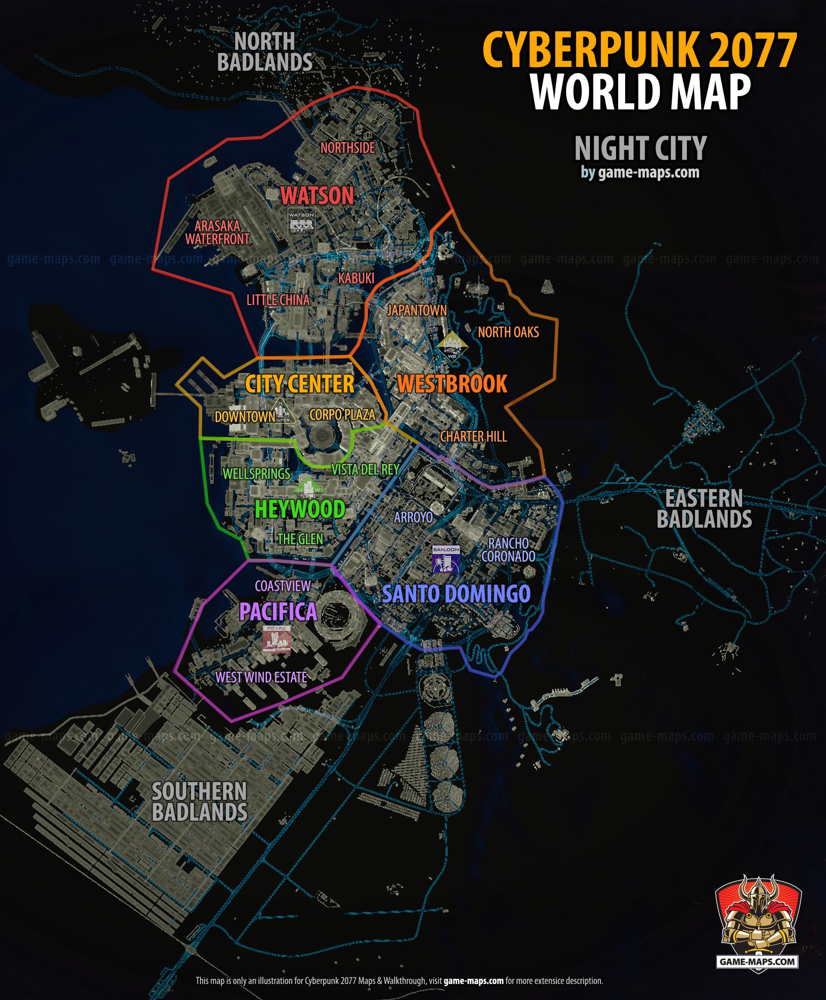
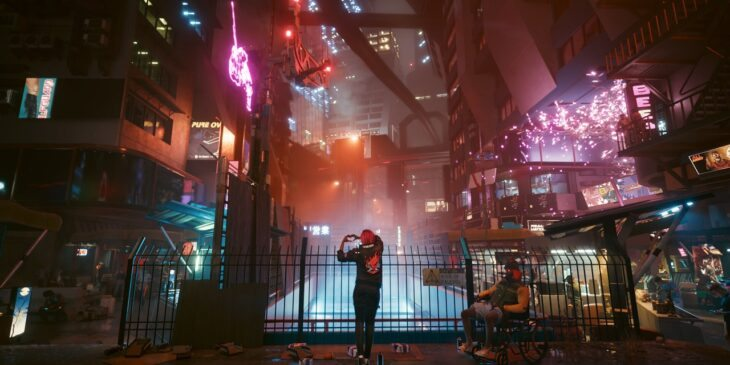
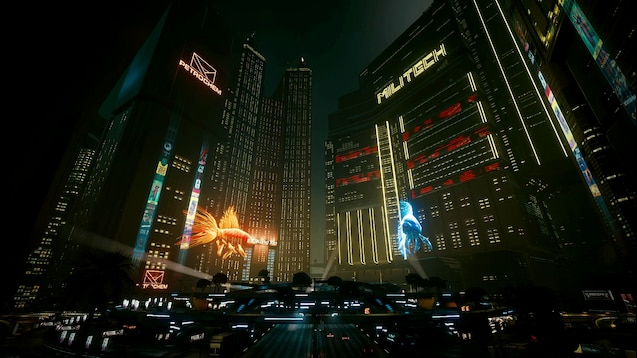
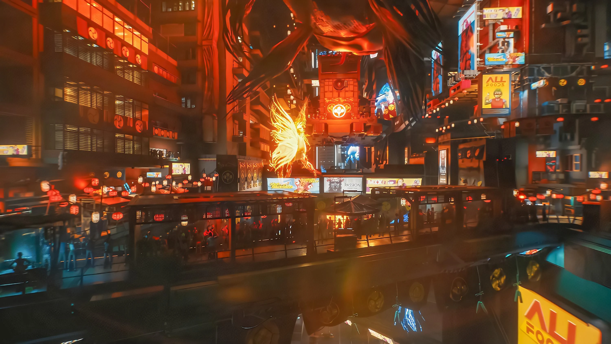

Night City est une ville trés vaste donc voici une liste non exhaustive des points d'intérêts de la ville.
Pour bien comprendre les points d'intérêts dont nous aller parler voici un plan des quartier de Night City.

Començons par little china

Bienvenue dans Little China, un quartier vibrant de Night City où l'ancien et le moderne se mêlent dans une fusion unique de cultures. Explorez les rues animées, goûtez à la délicieuse cuisine chinoise et plongez-vous dans l'héritage diversifié de ce quartier fascinant.
Points d'Intérêt
Cuisine Chinoise Authentique : Explorez les ruelles pour découvrir des restaurants proposant une variété de plats chinois authentiques. Des saveurs exquises vous attendent à chaque coin de rue.
Néons et Enseignes : La nuit, les néons illuminent Little China, créant une atmosphère magique. Promenez-vous dans les rues pour profiter du spectacle lumineux.
Casinos et Clubs de Strip-Tease : Little China offre une expérience nocturne animée. Les casinos abordables et les clubs de strip-tease attirent les habitants de toutes les classes sociales.
Rencontre Culturelle : Mêlez-vous aux habitants, des classes moyennes aux sans-abri. Explorez les rues pour une immersion totale dans la diversité de Little China.
Profitez de votre séjour à Little China, où chaque coin raconte une histoire et où le passé et le présent fusionnent pour créer une expérience unique à Night City.
Le coeur de Night city Corpo Plaza

Bienvenue à Corpo Plaza, le cœur battant du pouvoir corporatif à Night City. Après avoir émergé des cendres de la guerre, ce district a été méticuleusement reconstruit pour devenir l'épicentre des activités des mégacorporations. Explorez l'élégance imposante des gratte-ciels et des méga-bâtiments qui abritent les sièges d'Arasaka et de Militech, des entreprises qui ont façonné l'histoire tumultueuse de la ville.
Points d'Intérêt
1. Le Parc Commémoratif
Situé au centre de Corpo Plaza, le parc commémoratif est un hommage poignant aux victimes de la Quatrième Guerre des Corporations. Flânez dans ce rond-point colossal entouré des sièges sociaux imposants, témoignant d'un passé douloureux.
2. Architecture Corporative
Admirez l'architecture spectaculaire des gratte-ciels qui s'élèvent vers le ciel. Chaque bâtiment raconte l'histoire du pouvoir retrouvé des corporations, symbolisant une renaissance après des années de déclin.
3. Fourmillière Corporative
Plongez-vous dans l'activité incessante de Corpo Plaza, une fourmilière où les corporates se hâtent d'un rendez-vous à l'autre. Observez les va-et-vient frénétiques des cadres, chacun jouant son rôle dans la machine complexe des affaires.
4. Véhicules Autonomes Blindés
Le ciel de Corpo Plaza est constellé de véhicules autonomes blindés transportant les élites corporatives. Un spectacle futuriste qui illustre le mariage entre la technologie avancée et la puissance économique.
Soyez témoin du pouvoir, du prestige, et de la complexité de Corpo Plaza, un symbole vivant de la résilience de Night City face à l'adversité.
Bien évidemmnet Japantown

Bienvenue à Japantown, un quartier dynamique de contrastes où la culture japonaise rencontre l'effervescence urbaine de Night City. Découvrez les multiples facettes de ce lieu qui attire à la fois les touristes en quête d'expériences culturelles et les noctambules en quête de divertissements exaltants.
Attractions de Jour
1. Cherry Blossom Market
Plongez-vous dans l'ambiance vibrante du marché Cherry Blossom, offrant des produits japonais authentiques, des souvenirs uniques et une expérience immersive de la culture.
2. Temple Shintoïste
Profitez de la sérénité du temple shintoïste, un lieu de spiritualité au cœur de l'agitation urbaine. L'architecture traditionnelle contraste magnifiquement avec les gratte-ciels environnants.
3. Love Hotels et Kyabakura
Explorez les ruelles pour découvrir les love hotels et les kyabakura, témoignant de la vie nocturne unique de Japantown. L'éclairage créatif crée une atmosphère enchanteresse.
Expériences Nocturnes
1. Vie Nocturne Animée
Découvrez la transformation de Japantown une fois que le soleil se couche. Les bars, les clubs d'hôtesses et les salles de jeux s'animent, créant une atmosphère électrique.
2. Bordels de Luxe et Casinos
Pour une expérience nocturne plus audacieuse, explorez les bordels de luxe et les casinos où le glamour et la tentation s'entremêlent.
3. Attention aux Tyger Claws
Soyez conscient de votre environnement, surtout après la tombée de la nuit. Les Tyger Claws, les gangsters locaux, ajoutent une touche de danger à la vie nocturne de Japantown.
Japantown, un mélange fascinant de tradition et de modernité, est un incontournable pour les amateurs de culture, les fêtards nocturnes et tous ceux qui cherchent à capturer l'essence diversifiée de Night City.
Il ne faut pas oublié les Badlands
Soyez conscient que, malgré la beauté apparente des Badlands, ce refuge naturel n'est pas exempt de défis et de dangers. La nature sauvage qui règne ici peut être aussi imprévisible que captivante.
Évasion Panoramique :
Éloignez-vous de l'agitation urbaine et plongez dans la tranquillité des Badlands. C'est ici que la nature prend le relais, offrant un contraste saisissant avec l'éclat artificiel de Night City. Prenez de la hauteur et profitez d'une vue panoramique sur la ville scintillante à l'horizon.
Nomades et Gangs :
Les Badlands ne sont pas seulement le territoire des nomades, mais aussi le repaire d'un gang redoutable, principalement composé d'exilés de clans locaux et de familles notables telles que les Wraiths. Leurs activités comprennent des raids audacieux sur les convois des corporations, rendant tout passage sans escorte armée une entreprise risquée.
Ciel Étoilé Ininterrompu :
La nuit, les Badlands offrent un spectacle céleste sans égal. Loin des lumières éblouissantes de Night City, le ciel nocturne se dévoile dans toute sa splendeur. Laissez-vous emporter par la magie des étoiles, un spectacle qui devient rare dans l'éclat constant de la ville.
Conditions Environnementales :
Les conditions météorologiques dans les Badlands peuvent être extrêmes. Des tempêtes de sable aux changements brusques de température, soyez prêt à affronter les éléments. Une préparation adéquate est essentielle pour garantir une exploration en toute sécurité.
Les Badlands offrent une échappée inoubliable, mais la prudence reste de mise. Explorez avec respect et prévoyance pour garantir une aventure mémorable et sûre dans ce coin sauvage aux portes de Night City.